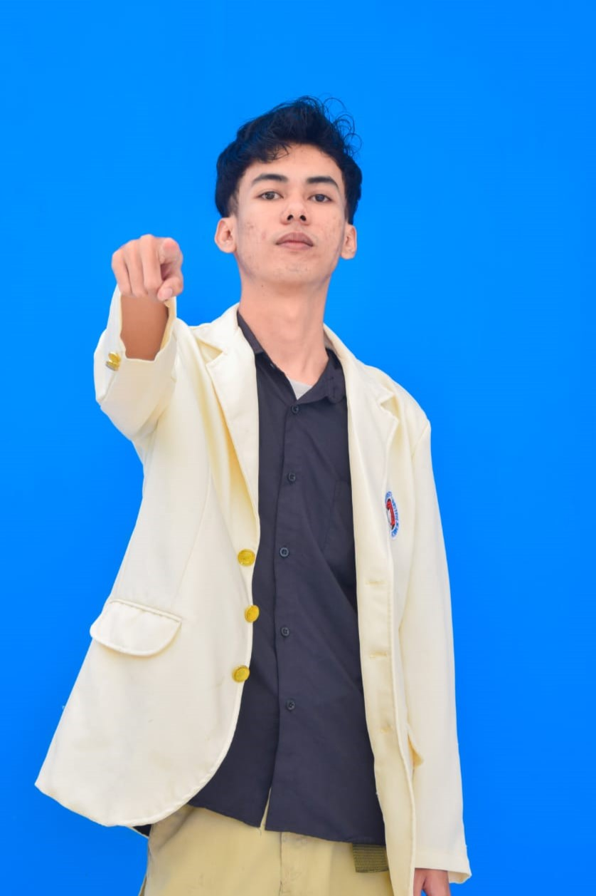

Saya Raihan Agil Maulana,mahasiswa semester 6 Program Studi S1 Sistem Informasi di Universitas Kristen Satya Wacana (UKSW). Saat ini sedang menempuh pendidikan dengan fokus pada pengembangan software dan pemrograman.
Memiliki pengalaman sebagai Asisten Dosen untuk mata kuliah Pemrograman Dasar (Python) dan Pemrograman Berorientasi Objek (PBO). Aktif dalam organisasi kemahasiswaan sebagai President ISACA Student Group UKSW periode 2025/2026.